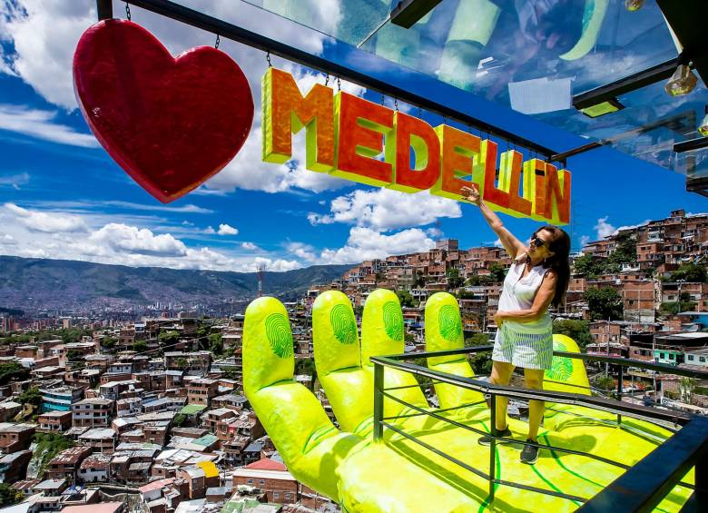

Medellín
CCity officially Special District of Science, Technology and Innovation
from Medellín, is the capital of the department of Antioquia.
It is the most populated city in the department and the second
most populated in the country after Bogotá.
Peñol
The rock of Guatapé, or Peñol stone (Tahamí language: Mojarrá),
It is a monolith 220 meters high,
located in the municipality of Guatapé, Antioquia, Colombia.
The stone of El Peñol is a granitic mass, composed of quartz,
feldspar and mica, was first climbed on July 16, 1954 by a
resident of the area, Luis Eduardo Villegas López.
Currently you can access its summit by climbing the 715 steps built into the monolith.
Andes
Its infrastructure in hotels, ecological and recreational parks and places to
nightlife is part of the new tourist developments in Andes,
municipality that keeps in the immense trees of the Park and in its old balconies,
the entire history of the greatness of Antioquia.
Santa Fé
Santa Fe de Antioquia is a Heritage Town of Colombia that keeps the treasures
most important historical events of the colonial and republican period in the department of Antioquia.
Jardín
In Colombia there are 17 heritage towns and Jardín, Antioquia is part of this
select group thanks to its particular charm.
Let yourself be captivated by the nature that surrounds you,
its culture and the diversity of traditions it has...
Rionegro
Rionegro is a municipality in Colombia, located in the department of Antioquia.
It is located in the San Nicolás valley or also called Altiplano del Oriente,
in the Eastern subregion, being
the city with the largest population and the one that concentrates the economic movement of the subregion.
Restaurants
The gastronomy of Medellín is found in the four cardinal points,
where the tray paisa is the most symbolic followed by the tripe and
the traditional snacks with blood sausage and arepa.
1. Mamasitas medallo (Pueblo)
2. Mondongo`s (La 70)
3. The Glory of Gloria (Envigado)
Comuna 13
Discover its history of social transformation by visiting
the Graffitour and letting yourself be enveloped by the colors of the
murals by mostly local artists, who have portrayed
their testimony of resilience through art.